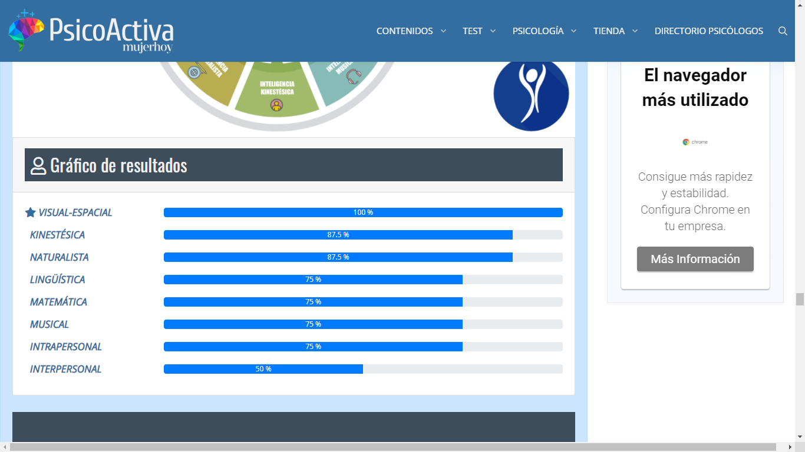

Eriksson Morales Díaz
¿Quien soy?
Mi nombre es Eriksson Morales Diaz. Yo nací un 13 de marzo de 2002 en la ciudad de santiago de
los caballeros.
Soy considerado como un joven muy curioso, creativo, analista, creador y entusiasta.
Me encanta la diversidad entre lo bueno y lo mejor, apreciando todo en nuestro alrededor.
Cosas que me hacen feliz
- La Música
- Aprender cosas nuevas
- Trabajar
- Tener disciplina
- Salir con mi familia
- Divertirme
- Crear
- Innovar
- Curiosear
- Hacer todo bien
Cosas que me hacen enojar
Cosas que me hacen enojar
- El maltrato.
- Hacer la cosa como no era.
- Que otra persona éste enojada conmigos
- Personas que contaminen el medio ambiente.
¿Qué me hace único/a?
Respeto mutuo, Amabilidad,
Tolerancia, Tranquilidad,
Esperanza, Resistencia,
Compasión, Alegre,
Creatividad, Sabio, Clásico,
Amoroso, Simpático, Honesto.
Test de inteligencia multiple
Test de Inteligencias Múltiples

Corto plazo
- Aprender Python 3.
- Adentrarme más en Linux y Termux.
- Poder practicar más los conocimientos aprendidos.
- Desarrollarme más en la comunicación Oral y Escrita.
- Terminar mi Libro.
- Ejercitarse más.
Mediano plazo
- Poder emprender en el ámbito laboral de manera profesional.
- Poder obtener mas conocimientos tanto de informática como de stylist hair.
- Tener conocimiento avanzado sobre linux y termux.
- Ser más eficiente con una computadora.
- Obtener conocimiento en redes y base de datos.
- Adquirir el mayor conocimiento que pueda.
Largo plazo
-
Lograr ver resultados en un futuro de mis conocimientos
siendo más eficiente que antes..
- Poder ser aprendiendo.
- Obtener el trabajo que deseo.
- Crear programas, aplicaciones y herramientas de todas clases.
- Saber programar de manera profesional y eficaz.
- Haber ciberseguridad en defensa.